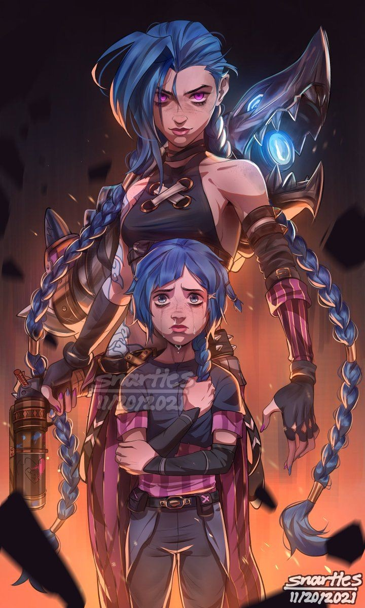

Meu nome é João Victor (Mais conhecido como couli ou Tonhão) tenho 17 anos moro no distrito federal, o que eu mais gosto de fazer é jogar diversos tipos de jogos battle Royal principalmente, jogar pra mim é como sair um pouco do mundo uma distração pra poder esquecer um pouco a rotina cansativa,me faz muito bem, foi o que eu mais fiz nessa quarenta além de trabalhar,não só isso mas tambem assisti diversas series (the whitcher) animes exp (tate no yusha) inclusive se alguém tiver lendo recomendo o anime é muito bom mesmo a quarenta não me afetou muito, perdi conhecidos sim,mas nada que prejudicasse meu psicológico.
Eu curto desenhar, é um dos meus hobbys preferidos porém parei a algum tempo talvez algum dia eu volte. Agora pra encerrar esse texto com a pergunta que eu mais escuto, "o que eu quero pra vida?" até um tempo atrás estava sem vontade de fazer faculdade o algo do tipo a única coisa que eu gostava mesmo era de desenhar e jogos mais me encontrei em técnico agrícola, é uma boa profissão pra viver.... gosto do interior acho que por isso a escolha, por fim é isso. 💥

| Filmes | Animes |
|---|---|
| Karate Kid | Arcane |
| Os Vingadores | Tate no Yusha |
| Aprendiz de feiticeiro | Piano April |
| Esquadrão suicida | Sword art Online |
| Homem-aranha | Naruto |
| Deadpool | Death Note |